淺談長文件的製作～以 Writer 為例 (4)

＊頁首製作與長文件製作建議篇＊
加入頁首
步驟一：
在本文的任意處按滑鼠右鍵，從快顯功能表上點選「頁面」。
步驟二：
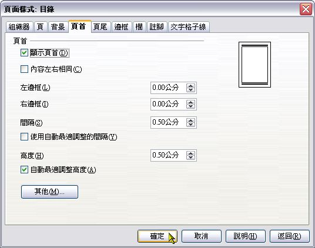
此時會開啟「頁面樣式」視窗，切換到「頁首」標籤，接著勾選「顯示頁首」並取消勾選「內容左右相同」，最後按一下「確定」。
步驟三：
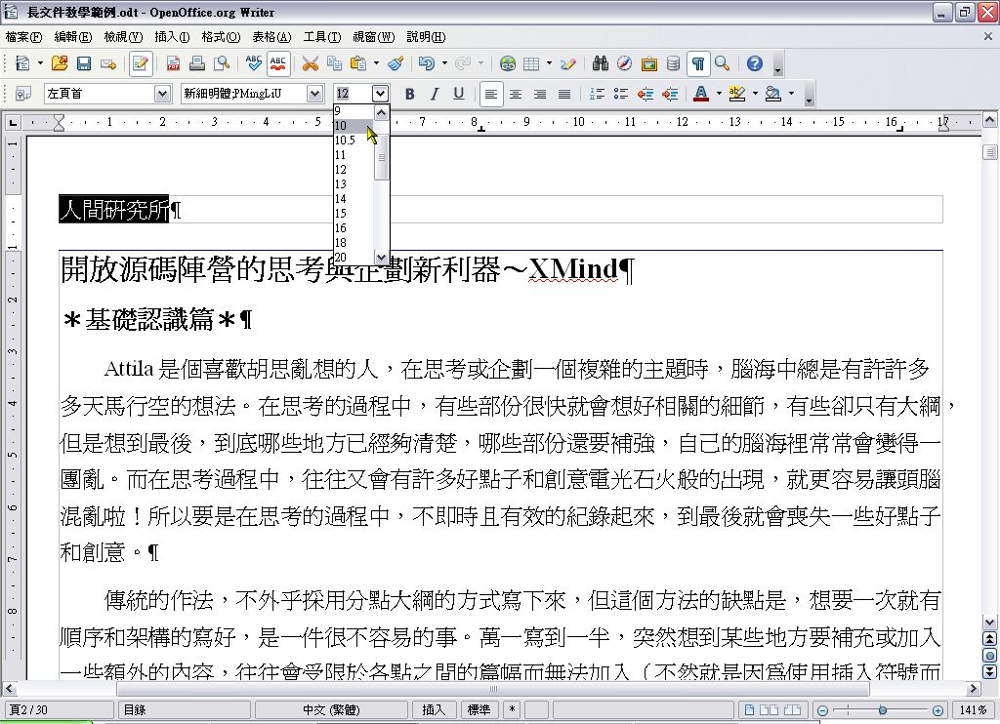
第二頁之後，全部的頁面都加入了頁首（別忘了，第一頁是目錄。由於插入點是在第二頁，所以顯示頁首的動作並不包含第一頁的目錄）。
把插入點移到第二頁的頁首，設定為向左對齊，然後輸入單位名稱。通常放在頁首的字不需要太大，避免奴欺主，影響了本文的閱讀，一般設為 8～10 級字就好。（此處我們設定為 10 級）
步驟四：
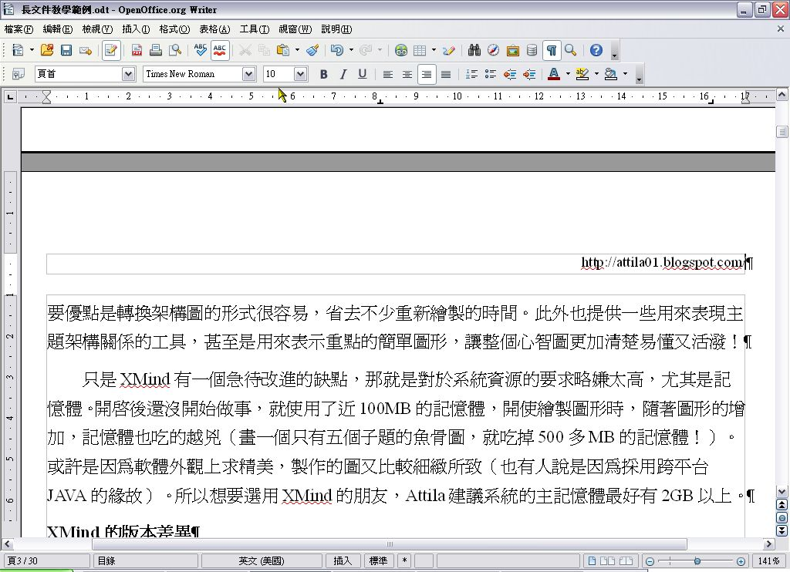
將插入點移到第三頁的頁首，接著把它設定為向右對齊，輸入內容之後，一樣把字體大小改為 10 級。
步驟五：
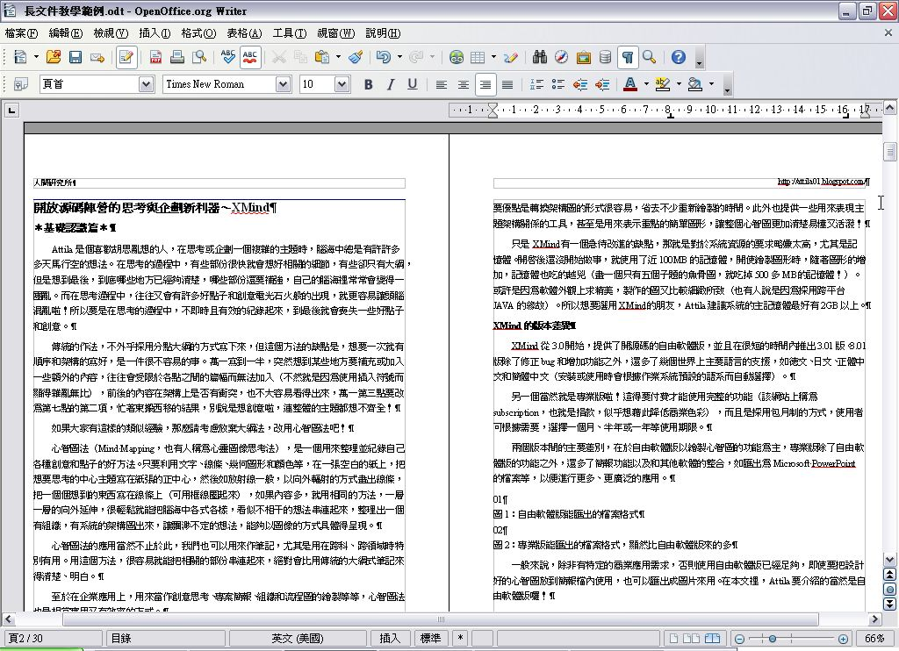
我們把檢視模式改為書籍模式並縮小顯示比例，我們會看到左右對頁的頁首都加入所希望出現的資訊。
匯出成 PDF 檔
儲存檔案，是製作任何文件或作品一定要做的事。一般來說，只要儲存成編輯軟體預設的檔案格式即可（方便日後的編修）。不過和他人進行檔案交換的時候，必須要考慮對方有沒有辦法開啟檔案並加以檢視的問題。
要避免無法檢視的窘境，最好的方法就是輸出成跨平台且廣為接受的格式。目前，具有這種優勢的檔案格式，莫過於 PDF 和 HTML 檔。如果不確定收受檔案者能否檢視自己所採用的檔案，那麼匯出或轉存這二種格式之一，是不錯的選擇。OpenOffice.org Writer，對於這二種檔案格式的匯出或轉存都很容易，最棒的是不需要借助其他的軟體，就可自力完成！（通常電腦內少裝一點軟體，效能會比較高一點啦！）
步驟一：
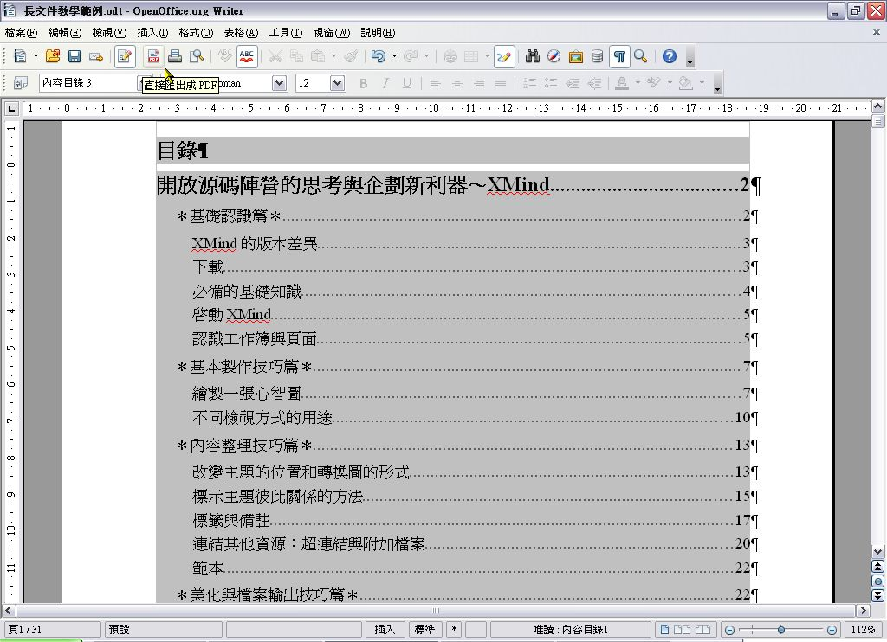
按一下標準工具列的「直接匯出成PDF」鈕。
步驟二：
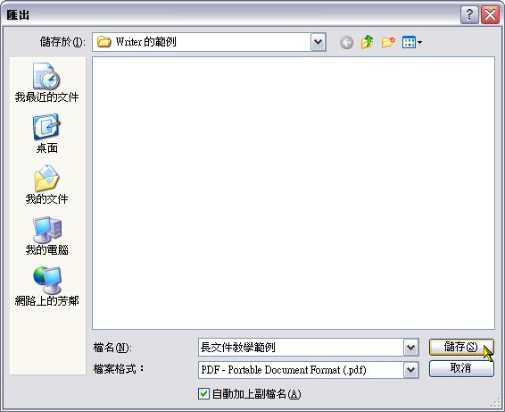
出現「匯出」的視窗後，選擇要存放檔案的資料夾，接著輸入檔名，然後按一下「儲存」。
步驟三：
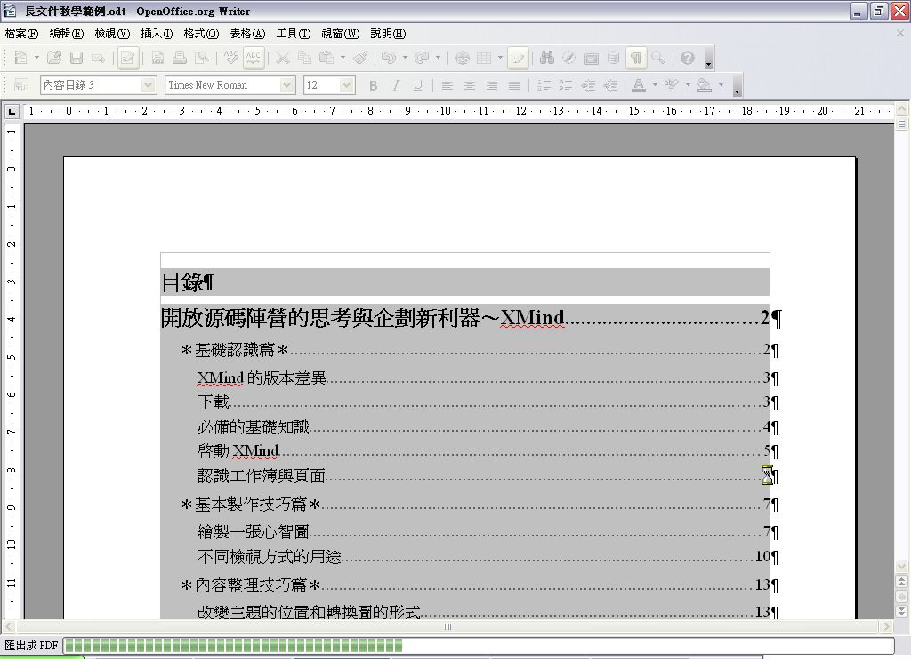
狀態列上會出現匯出成 PDF 檔的進度。和其他轉成 PDF 檔的第三方軟體相比，Writer 的匯出速度算快。（當然也要看該文件長不長；加入的圖片多不多）
步驟四：
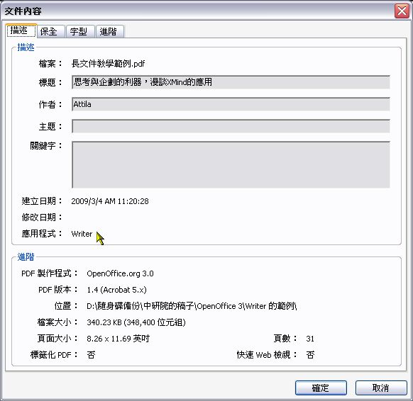
匯出後，以 PDF 閱讀器來檢視文件的基本資料和屬性，此處可知道製作的程式以及所採用的 PDF 版本。
步驟五：
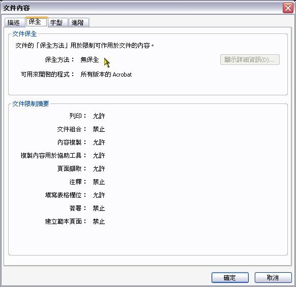
在「保全」的標籤內，我們會發現 Writer 匯出 PDF 檔的預設值，是不包括保全的相關設定。如果希望加上保全的相關設定，那麼就得用另外的方法。
步驟六：
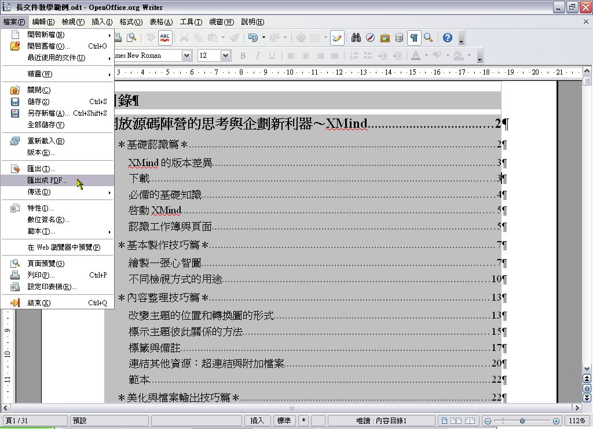
切換回Writer後，按功能表的「檔案」＼「匯出成 PDF」。
步驟七之一：
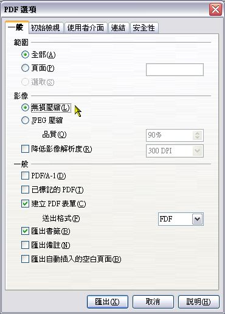
此時會出現「PDF 選項」的視窗。這裡有轉換成PDF檔時，常用的各種選項可以設定。例如在「一般」標籤內，可以針對檔案內的圖片進行壓縮，好讓匯出的 PDF 小一點。當然，若不希望圖片因過度壓縮而變得模糊，也可如上圖一般選擇「無損壓縮」。
步驟七之二：
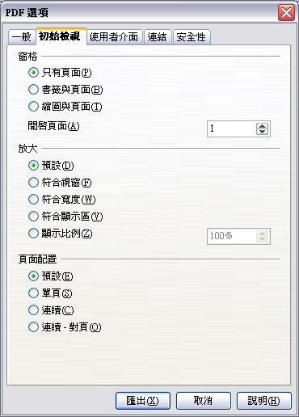
「初始檢視」標籤內所要設定的是，當使用者打開 PDF 檔時，將會如何顯示內容之意。如要不要同時顯示頁面和書籤？顯示比例要固定還是配合閱讀器的預設值？頁面是單頁還是對頁？在此我們都可加以設定，如無特別需求，採用預設值就好。
步驟七之三：
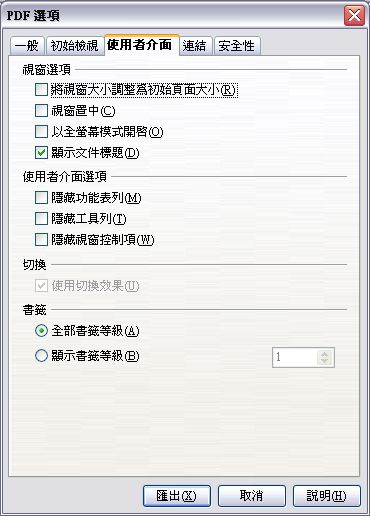
「使用者介面」標籤內，是一些有關閱讀器的視窗和使用介面的設定。例如若想要有最大的頁面顯示空間，就可以勾選「隱藏功能表列」、「隱藏工具列」等選項，那麼在開啟該PDF檔時，閱讀器的功能表列和工具列就會被隱藏起來。
步驟七之四：
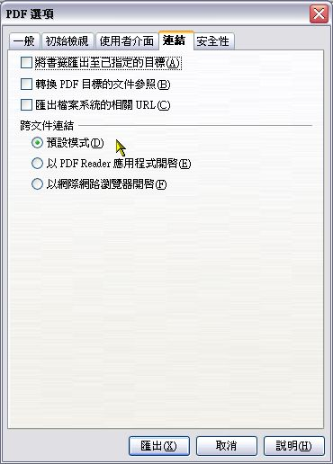
「連結」標籤所要設定的是原本文件內所設定的書籤、超連結等，在轉換為PDF之後將以何種形式出現。一般來說，此處只要使用預設值即可。
步驟七之五
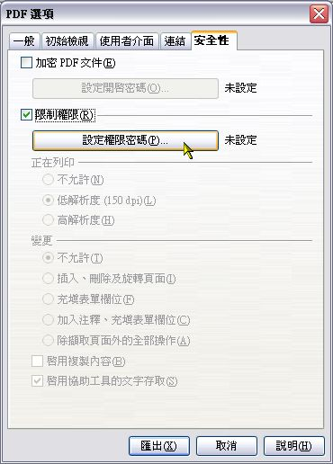
「安全性」標籤，就是要設定有關保全的地方。「加密 PDF 文件」所設定的是當要開啟加密的 PDF 檔案時，必須先輸入和此處所設定一樣的密碼。（當別人要開啟這個檔案，將會出現輸入密碼的視窗，輸入的密碼錯誤就無法打開檔案，藉此達到保密的效果）
至於「限制權限」，則是針對檔案的一些屬性或功能加以限制的意思，例如禁止列印、複製內容等、啟用協助工具等。要進行細部設定前，除了要先勾選「限制權限」外，還得先設定密碼才行，所以這裡要按一下「設定權限密碼」。
步驟八：
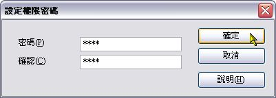
出現「設定權限密碼」的視窗後，在「密碼」欄和「確認」欄內輸入相同的密碼。
至於要設定怎樣的密碼比較不容易被猜出，不外乎是長一點且英數混合使用，例如 j1o3h5n7（由 john 和 1357 交叉混合組成）。當然，自己也要記得住啦！
步驟九：
設定完密碼後，底下欄位的細部設定就可以使用。這裡我們取消勾選「啟用複製內容」，如此別人就沒辦法直接從 PDF 檔案內複製文件的內容。
全部設定完成後，按一下「匯出」。
步驟十：
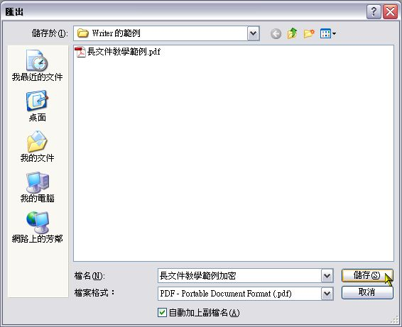
和前面一樣，出現「匯出」視窗後，選擇存檔的資料夾並輸入檔名，最後按一下「儲存」。
狀態列開始出現匯出的進度……
步驟十二：
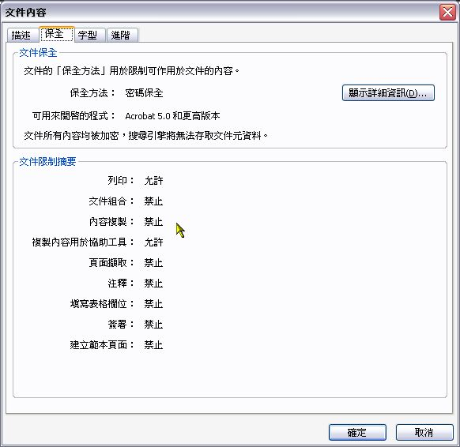
匯出完成後檢視一下該 PDF 檔案。我們會看到被限制的項目，包括上一步驟特別提到的禁止內容複製。
至於加了保全設定後，這個檔案有沒有加密呢？答案是有，加密的方式是 RC4，128 bit（因為使用的是 Acrobat 5.0 的 PDF 版本）。
轉存成HTML檔
步驟一：
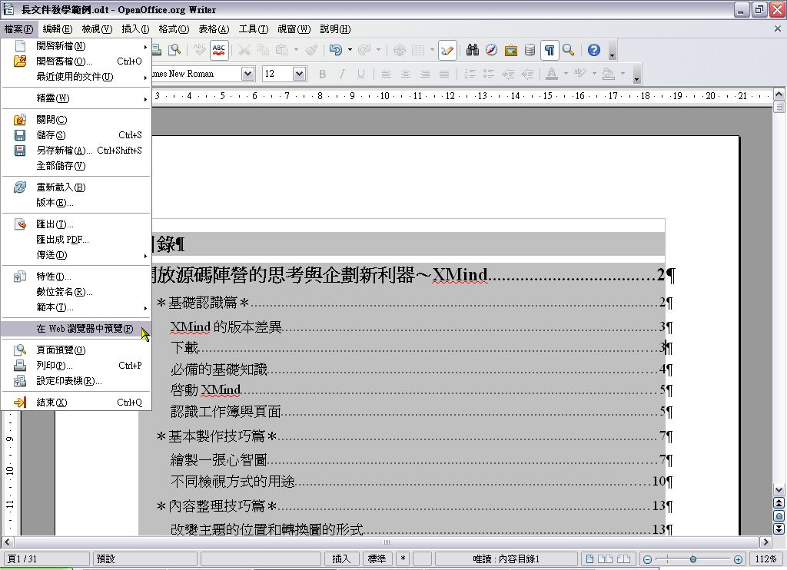
轉存成 HTML 檔之前，可以先預覽看看效果如何。因此先按一下功能表的「檔案」＼「在 Web 瀏覽器中預覽」。
步驟二：
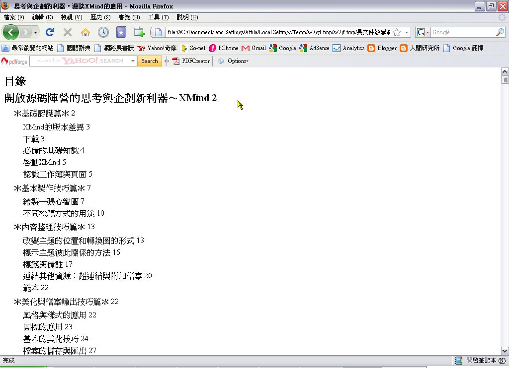
此時會開啟預設的瀏覽器，可以看到轉成 HTML 後的樣子。通常，某些設定或版面會變得和原始文件不大一樣，所以要給人家這種檔案之前，得先確定這些設定跑掉會不會有什麼不良影響。
步驟三：
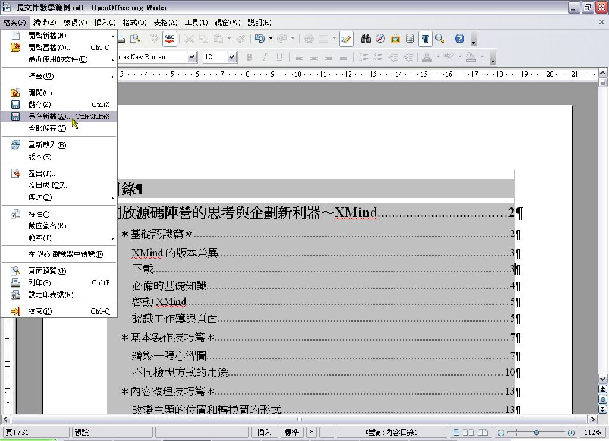
確定要存成 HTML 檔之後，就按一下功能表的「檔案」＼「另存新檔」。
步驟四：
在「另存新檔」的視窗中，選擇要儲存檔案的資料夾並輸入檔名，「存檔類型」則記得要選擇「HTML 文件」，最後才按一下「儲存」。
這裡要特別注意，如果文件內有圖片，檔名最好使用英文，以免相關圖片的連結產生錯誤而無法正確的顯示在瀏覽器內。
步驟五：
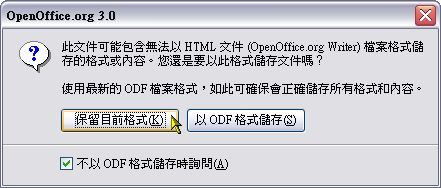
此時會出現提示的對話視窗，告知轉換之後，某些格式或內容可能會消失。可是我們已經決定要存為 HTML，所以就只能按一下「保留目前格式」。
步驟六：
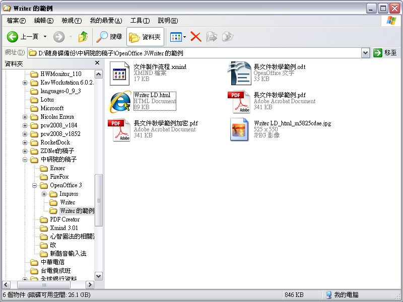
開啟存放該 HTML 檔的資料夾，除了會看到該 HTML 檔之外，也會看到該檔案所用的圖片（本例中所用的 JPEG 圖片檔，已經被複製一份至此並重新命名為 WriterLD_HTML_m5825cdae.jpg）。
在該 HTML 檔案按二下，好看看轉存後的效果如何。
步驟七：
以預設瀏覽器開啟後，所看到的樣子和預覽時一模一樣（使用 Firefox 3 和 Internet Explorer 7 來看也都一樣）。
除了分享檔案的理由之外，如果文件是要放在網站上，轉存成 HTML 檔案之後相對比較省事。
最後還是要不厭其煩的提醒大家，要轉存成HTML檔之前，最好還是先預覽一下，確定轉出後的樣子是自己要的，若等到輸出後才發現不是想要的樣子，那豈不是做白工，浪費寶貴的時間？
結語
以上所談是製作長文件時，除文件本體以外最常加入的部份。事實上，長文件還有許多技巧，但既然是以「有助於閱讀」為出發點，因此只選擇這幾項常見又有必要性的來談，其他的技巧，Attila 認為是屬於錦上添花的作用，是否要運用在自己的文件上，就看所設計的文件要用在什麼地方。或許，所製作的是商用產品、宣傳手冊等，除了閱讀方便之外，自然還要加上「能吸引消費者目光」來考量。
最後，要跟大家分享的，是製作長文件的流程。以本文的教學為例，通常一位專業且有經驗的知識工作者，是不會採用「先製作文件內容，再加上額外的部份」這樣的流程，應該是「先規劃好文件內容、頁面配置、版面設計，再撰寫文件內容」的流程，因為事後的修改，往往會花費更大的力氣，而且不見得會達到預想的效果。
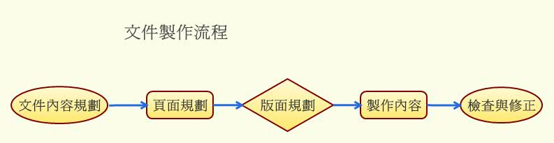
圖3：文件的製作流程
在實務上，當然是先根據主題來規劃文件的內容架構，設想一下有多少內容？需不需要分章節？如果要分章節，有沒有必要加目錄？頁面要怎麼配置？要不要加首頁？或許可以先把首頁和目錄頁預留起來，等到完成文件後，再根據實際需要來決定要不要加入。畢竟，東西還沒完全定稿前，會做什麼樣的修改是很難說的。（簡單講，就是看老闆的想法和作風）。當然，影響視覺的版面的設計和圖文配置也得要好好考慮。
這些規劃都大致想好之後，接著才是撰寫和編輯內容。在撰寫初期，最好就把樣式建立起來（更好的作法是設計成範本並儲存起來，以後建立相同性質的文件才會快）。樣式一旦建立起來，在編寫的過程中如遇到標題（或其他的東西，此處只是隨便抓一個來當例子），就可以馬上套用標題的樣式，這樣會節省很多設定格式的時間。萬一，在編輯完初稿之後，發現內文的段落間距太大，經過考慮後決定全部要縮小，只要修改樣式，那麼所有套用相同樣式的內文，就能一次全部改好，不必一個個段落修改。若沒有樣式，加上不夠細心的人，某些段落沒更改的機會就大的像太平洋一樣！光是檢查和修改，就會讓人抓狂！（別懷疑，Attila 常看到有人加班就是為了改這個！）
至於頁首、頁尾和頁碼等，都是一開始就可以加入的，不必等到最後再處理。這些地方，如果一開始就能做好，比較不會有掛一漏萬的現象。不要等到事後檢查才發現沒加入，又要手忙腳亂的改（因為到最後，總是有位高權重的人像黑白無常一樣死命的催）。先把這些所有頁面都會出現的東西做好，對於長文件的編輯，無疑會省下一些不必要的麻煩和時間。
那這篇文章的教學，顯然採取的是完全外行且不專業的方式，這是為什麼呢？這全都是為了操作教學方便，而不是 Attila 外行（這種事，當然是打死都不會承認的啦！）。如果採用專業的作法，那麼某些功能的教學畫面，會因為沒有內文而不容易看出效果來，這樣子反而會讓大家產生誤會，以為這些功能的結果，不會自動產生在所有的頁面內，或者只會出現在某些被指定的頁面上。這樣子會讓大家對於軟體的功能，產生認識不全的現象，對日後的長文件製作會有不良影響。那時候就會罵 Attila 是個不專業的傢伙！居然做了不完整的教學示範！
所以在這裡要給大家最後一個建議，那就是當瞭解並熟悉本文所教的技巧後，請把教學順序忘掉，改以專業的作法來取代，這樣子才算真的把本文的精髓全部學起來哦！
（完）
You may be interested in the following articles:
- 淺談長文件的製作～以 Writer 為例 (3) - 2009-06-12
- 淺談長文件的製作～以 Writer 為例 (2) - 2009-05-20
- 淺談長文件的製作～以 Writer 為例 (1) - 2009-05-05